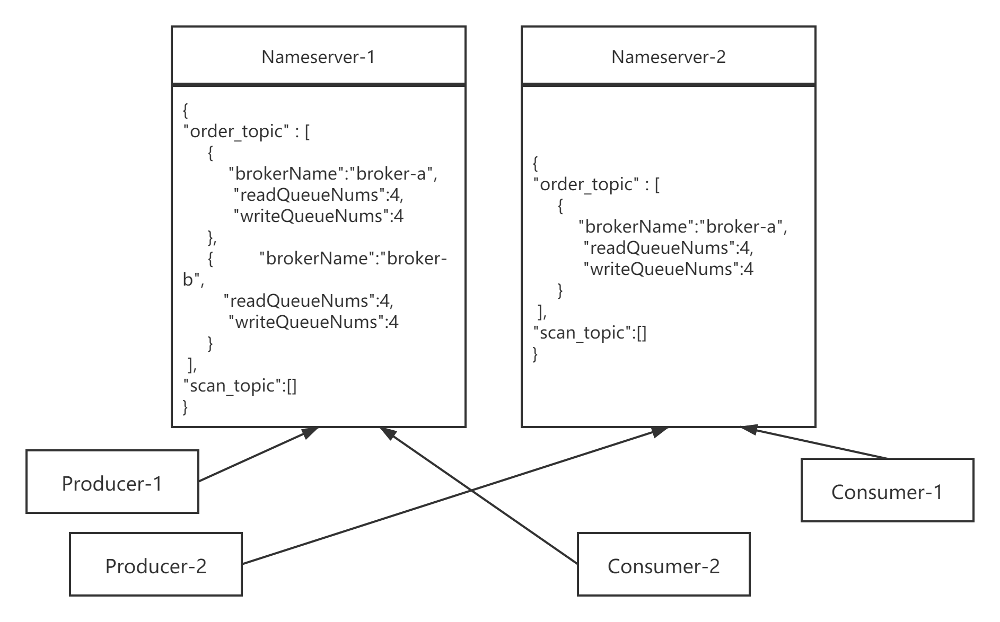

- 01 搭建学习环境准备篇.md.html
- 02 RocketMQ 核心概念扫盲篇.md.html
- 03 消息发送 API 详解与版本变迁说明.md.html
- 04 结合实际应用场景谈消息发送.md.html
- 05 消息发送核心参数与工作原理详解.md.html
- 06 消息发送常见错误与解决方案.md.html
- 07 事务消息使用及方案选型思考.md.html
- 08 消息消费 API 与版本变迁说明.md.html
- 09 DefaultMQPushConsumer 核心参数与工作原理.md.html
- 10 DefaultMQPushConsumer 使用示例与注意事项.md.html
- 11 DefaultLitePullConsumer 核心参数与实战.md.html
- 12 结合实际场景再聊 DefaultLitePullConsumer 的使用.md.html
- 13 结合实际场景顺序消费、消息过滤实战.md.html
- 14 消息消费积压问题排查实战.md.html
- 15 RocketMQ 常用命令实战.md.html
- 16 RocketMQ 集群性能摸高.md.html
- 17 RocketMQ 集群性能调优.md.html
- 18 RocketMQ 集群平滑运维.md.html
- 19 RocketMQ 集群监控（一）.md.html
- 20 RocketMQ 集群监控（二）.md.html
- 21 RocketMQ 集群告警.md.html
- 22 RocketMQ 集群踩坑记.md.html
- 23 消息轨迹、ACL 与多副本搭建.md.html
- 24 RocketMQ-Console 常用页面指标获取逻辑.md.html
- 25 RocketMQ Nameserver 背后的设计理念.md.html
- 26 Java 并发编程实战.md.html
- 27 从 RocketMQ 学基于文件的编程模式（一）.md.html
- 28 从 RocketMQ 学基于文件的编程模式（二）.md.html
- 29 从 RocketMQ 学 Netty 网络编程技巧.md.html
- 30 RocketMQ 学习方法之我见.md.html
- 捐赠
25 RocketMQ Nameserver 背后的设计理念
Nameserver 在 RocketMQ 整体架构中所处的位置就相当于 ZooKeeper、Dubbo 服务化架构体系中的位置，即充当“注册中心”，在 RocketMQ 中路由信息主要是指主题（Topic）的队列信息，即一个 Topic 的队列分布在哪些 Broker 中。
Nameserver 工作机制

Topic 的注册与发现主要的参与者：Nameserver、Producer、Consumer、Broker。其交互特性与联通性如下：
- Nameserver：命名服务器，多台机器组成一个集群，每台机器之间互不联通。
- Broker：Broker 消息服务器，会向 Nameserver 中的每一台 NamServer 每隔 30s 发送心跳包，即 Nameserver 中关于 Topic 路由信息来源于 Broker。正式由于这种注册机制，并且 Nameserver 互不联通，如果出现网络分区等因素，例如 broker-a 与集群中的一台 Nameserver 网络出现中断，这样会出现两台 Nameserver 中的数据出现不一致。具体会有什么影响下文会继续探讨。
- Producer、Consumer：消息发送者、消息消费者，在同一时间只会连接 Nameserver 集群中的一台服务器，并且会每隔 30s 会定时更新 Topic 的路由信息。
另外 Nameserver 会定时扫描 Broker 的存活状态，其依据之一是如果连续 120s 未收到 Broker 的心跳信息，就会移除 Topic 路由表中关于该 broker 的所有队列信息，这样消息发送者在发送消息时就不会将消息发送到出现故障的 Broker 上，提高消息发送高可用性。
Nameserver 采用的注册中心模式为——PULL 模式，接下来会详细介绍目前主流的注册中心实现思路，从而从架构上如何进行选择。
两种设计注册中心的思路
PUSH 模式
说到服务注册中心，大家肯定会优先想到 Dubbo 的服务注册中心 ZooKeeper，正式由于这种“先入为主”，不少读者朋友们通常也会有一个疑问：为什么 RocketMQ 的注册中心不直接使用 ZooKeeper，而要自己实现一个 Nameserver 的注册中心呢？
那我们首先来聊一下 Dubbo 的服务注册中心：ZooKeeper，基于 ZooKeeper 的注册中心有一个显著的特点是服务的动态变更，消费者可以实时感知。例如在 Dubbo 中，一个服务进行在线扩容，增加一批的消息服务提供者，消费者能立即感知，并将新的请求负载到新的服务提供者，这种模式在业界有一个专业术语：PUSH 模式。

基于 ZooKeeper 的服务注册中心主要是利于 ZooKeeper 的事件机制，其主要过程如下：
- 消息服务提供者在启动时向注册中心进行注册，其主要是在 /dubbo/{serviceName}/providers 目录下创建一个瞬时节点。服务提供者如果宕机该节点就会由于会话关闭而被删除。
- 消息消费者在启动时订阅某个服务，其实就是在 /dubbo/{serviceName}/consumers 下创建一个瞬时节点，同时监听 /dubbo/{serviceName}/providers，如果该节点下新增或删除子节点，消费端会收到一个事件，ZooKeeper 会将 providers 当前所有子节点信息推送给消费消费端，消费端收到最新的服务提供者列表，更新消费端的本地缓存，及时生效。
基于 ZooKeeper 的注册中心一个最大的优点是其实时性。但其内部实现非常复杂，ZooKeeper 是基于 CP 模型，可以看出是强一致性，往往就需要吸收其可用性，例如如果 ZooKeeper 集群触发重新选举或网络分区，此时整个 ZooKeeper 集群将无法提供新的注册与订阅服务，影响用户的使用。
在服务注册领域服务数据的一致性其实并不是那么重要，例如回到 Dubbo 服务的注册与订阅场景来看，其实客户端（消息消费端）就算获得服务提供者列表不一致，也不会造成什么严重的后果，最多是在一段时间内服务提供者的负载不均衡，只要最终能达到一致即可。
PULL 模式
RocketMQ 的 Nameserver 并没有采用诸如 ZooKeeper 的注册中心，而是选择自己实现，如果大家看过 RocketMQ 的源代码，就会发现该模块就 5~6 个类，总代码不超过 5000 行，简单就意味着高效，基于 PULL 模式的注册中心示例图：

- Broker 每 30s 向 Nameserver 发送心跳包，心跳包中包含主题的路由信息（主题的读写队列数、操作权限等），Nameserver 会通过 HashMap 更新 Topic 的路由信息，并记录最后一次收到 Broker 的时间戳。
- Nameserver 以每 10s 的频率清除已宕机的 Broker，Nameserver 认为 Broker 宕机的依据是如果当前系统时间戳减去最后一次收到 Broker 心跳包的时间戳大于 120s。
- 消息生产者以每 30s 的频率去拉取主题的路由信息，即消息生产者并不会立即感知 Broker 服务器的新增与删除。
PULL 模式的一个典型特征是即使注册中心中存储的路由信息发生变化后，客户端无法实时感知，只能依靠客户端的定时更新更新任务，这样会引发一些问题。例如大促结束后要对集群进行缩容，对集群进行下线，如果是直接停止进程，由于是网络连接直接断开，Nameserver 能立即感知 Broker 的下线，会及时存储在内存中的路由信息，但并不会立即推送给 Producer、Consumer，而是需要等到 Producer 定时向 Nameserver 更新路由信息，那在更新之前，进行消息队列负载时，会选择已经下线的 Broker 上的队列，这样会造成消息发送失败。
在 RocketMQ 中 Nameserver 集群中的节点相互之间不通信，各节点相互独立，实现非常简单，但同样会带来一个问题：Topic 的路由信息在各个节点上会出现不一致。
那 Nameserver 如何解决上述这两个问题呢？RocketMQ 的设计者采取的方案是不解决，即为了保证 Nameserver 的高性能，允许存在这些缺陷，这些缺陷由其使用者去解决。
由于消息发送端无法及时感知路由信息的变化，引入了消息发送重试与故障规避机制来保证消息的发送高可用，这部分内容已经在前面的文章中详细介绍。
那 Nameserver 之间数据的不一致，会造成什么重大问题吗？
Nameserver 数据不一致影响分析
RocketMQ 中的消息发送者、消息消费者在同一时间只会连接到 Nameserver 集群中的某一台机器上，即有可能消息发送者 A 连接到 Namederver-1 上，而消费端 C1 可能连接到 Nameserver-1 上，消费端 C2 可能连接到 Nameserver-2 上，我们分别针对消息发送、消息消费来谈一下数据不一致会产生什么样的影响。
Nameserver 数据不一致示例图如下：

对消息发送端的影响
正如上图所示，Producer-1 连接 Nameserver-1，而 Producer-2 连接 Nameserver-2，例如这个两个消息发送者都需要发送消息到主题 order_topic。由于 Nameserver 中存储的路由信息不一致，对消息发送的影响不大，只是会造成消息分布不均衡，会导致消息大部分会发送到 broker-a 上，只要不出现网络分区的情况，Nameserver 中的数据会最终达到一致，数据不均衡问题会很快得到解决。故从消息发送端来看，Nameserver 中路由数据的不一致性并不会产生严重的问题。
对消息消费端的影响
如果一个消费组 order_consumer 中有两个消费者 c1、c2，同样由于 c1、c2 连接的 Nameserver 不同，两者得到的路由信息会不一致，会出现什么问题呢？我们知道，在 RocketMQ PUSH 模式下会自动进行消息消费队列的负载均衡，我们以平均分配算法为例，来看一下队列的负载情况。
- c1：在消息队列负载的时查询到 order_topic 的队列数量为 8 个（broker-a、broker-b 各 2 个），查询到该消费组在线的消费者为 2 个，那按照平均分配算法，会分配到 4 个队列，分别为 broker-a：q0、q1、q2、q3。
- c2：在消息队列负载时查询到 order_topic 的队列个数为 4 个（broker-a），查询到该消费组在线的消费者 2 个，按照平均分配算法，会分配到 2 个队列，由于 c2 在整个消费列表中处于第二个位置，故分配到队列为 broker-a：q2、q3。
将出现的问题一目了然了吧：会出现 broker-b 上的队列分配不到消费者，并且 broker-a 上的 q2、q3 这两个队列会被两个消费者同时消费，造成消息的重复处理，如果消费端实现了幂等，也不会造成太大的影响，无法就是有些队列消息未处理，结合监控机制，这种情况很快能被监控并通知人工进行干预。
当然随着 Nameserver 路由信息最终实现一致，同一个消费组中所有消费组，最终维护的路由信息会达到一致，这样消息消费队列最终会被正常负载，故只要消费端实现幂等，造成的影响也是可控的，不会造成不可估量的损失，就是因为这个原因，RocketMQ 的设计者们为了达到简单、高效之目的，在 Nameserver 的设计上允许出现一些缺陷，给我们做架构设计方案时起到了一个非常好的示范作用，无需做到尽善尽美，懂得抉择、权衡。
© 2019 - 2023 Liangliang Lee. Powered by gin and hexo-theme-book.